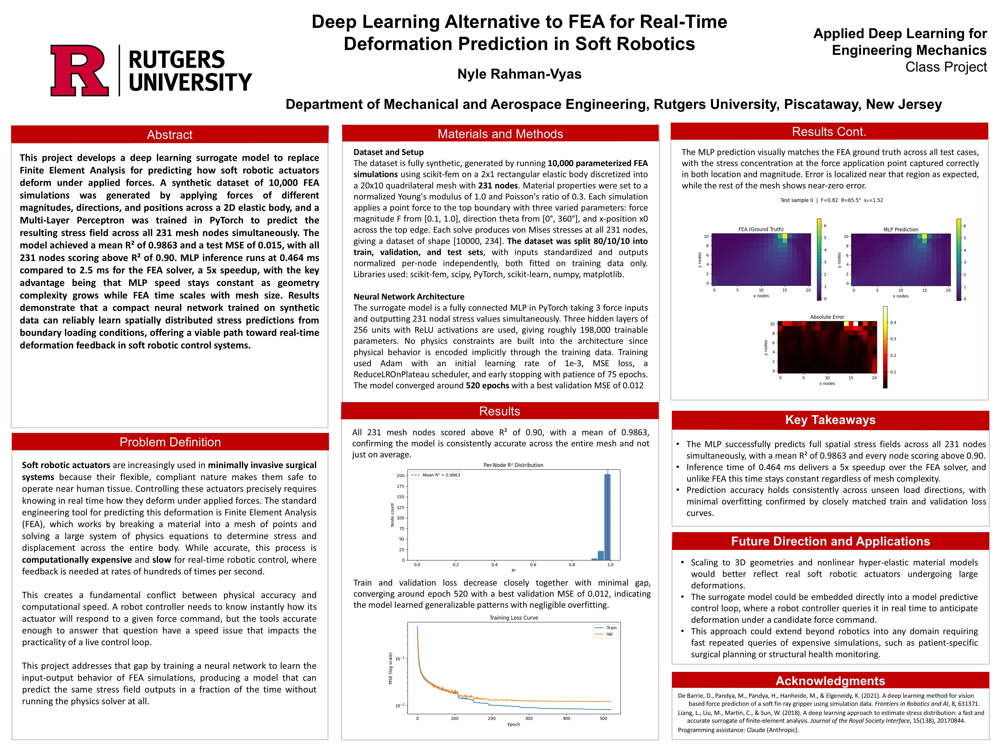
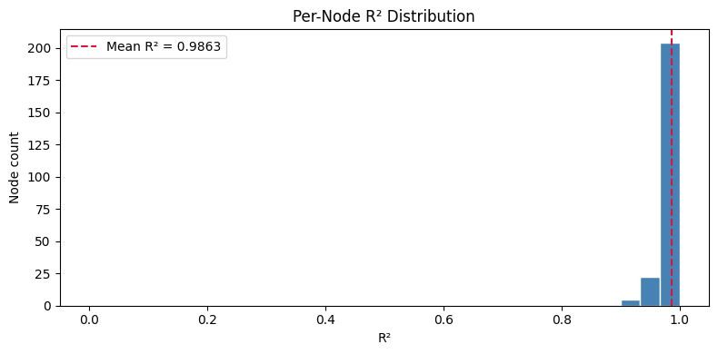
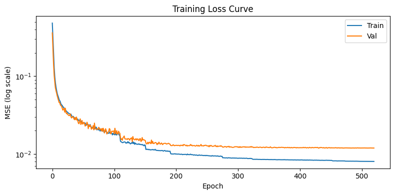
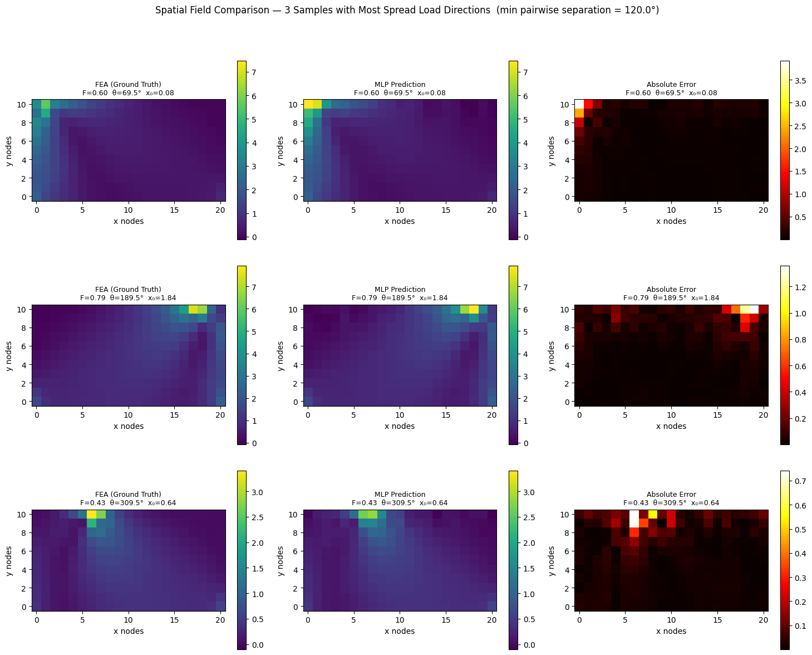

Deep Learning in Mechanics: Neural Network FEA Surrogate

PROJECT POSTER — NEURAL NETWORK SURROGATE FOR FEA IN SOFT ROBOTICSWHY I BUILT THIS
I have always been drawn to surgical robotics, specifically the challenge of making robotic systems precise enough to operate safely around human tissue. When thinking about my deep learning final project, I kept coming back to a problem I had seen across my mechanics coursework: Finite Element Analysis is one of the most powerful tools we have for understanding material behavior under load, but it is slow by design. That trade-off felt like exactly the kind of problem machine learning should be able to solve. So I set out to build a neural network that could replace the physics solver entirely.
THE PROBLEM
Soft robotic actuators used in surgical systems need real-time deformation feedback to be controlled precisely. FEA can compute that feedback accurately but takes several milliseconds per solve, which is too slow for a live control loop running hundreds of times per second. The faster you need the answer, the less useful FEA becomes.
WHAT I BUILT
I generated 10,000 FEA simulations from scratch using scikit-fem, each applying a force with a different magnitude, direction, and position along the boundary of a 2D elastic mesh. Each simulation produced stress values at 231 mesh nodes. A Multi-Layer Perceptron was then trained in PyTorch to learn the mapping from those three force inputs to the full 231-node stress field output simultaneously.
The data generation pipeline was entirely my own work, which is what makes this meaningfully different from standard coursework. No dataset was provided or downloaded. Every training example came from a physics simulation I parameterized and ran myself.
RESULTS
The model achieved a mean R² of 0.9863 across all 231 nodes on completely unseen test data, with every node individually scoring above 0.90. Visually the predicted stress fields closely match the FEA ground truth, with the stress concentration at the force application point captured correctly in both location and magnitude.
On speed, MLP inference runs at 0.464 ms versus 2.5 ms for a single FEA solve — a 5x speedup on this mesh. The more important point is that MLP speed stays constant as geometry grows while FEA time scales with mesh complexity, meaning the real advantage is much larger on realistic 3D geometries.

FIG. — R² SCORE DISTRIBUTION ACROSS ALL 231 NODES — Every node scores above 0.90, with a mean R² of 0.9863 on completely unseen test data.
FIG. — TRAINING vs. VALIDATION LOSS — The gap between training and validation loss shrinks significantly as dataset size scales from 500 to 10,000 samples, showing the direct effect of data volume on generalization.
FIG. — PREDICTED vs. GROUND-TRUTH STRESS FIELD — The model replicates the FEA stress distribution across the mesh, including the concentration at the force application point.KEY TAKEAWAYS
The result that stuck with me most was how visibly dataset size affected generalization. At 500 samples there was a clear gap between training and validation loss — a sign of overfitting. Scaling to 10,000 samples nearly closed that gap entirely. Watching that change directly in the loss curves made the concept click in a way that coursework alone had not.
REFERENCES
Liang et al. (2018) — A deep learning approach to estimate stress distribution: a fast and accurate surrogate of FEA. Journal of the Royal Society Interface.
De Barrie et al. (2021) — A deep learning method for vision based force prediction of a soft fin ray gripper using simulation data. Frontiers in Robotics and AI.